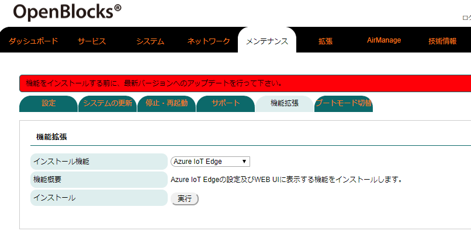
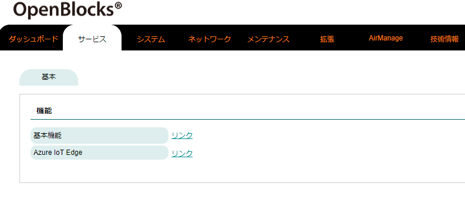
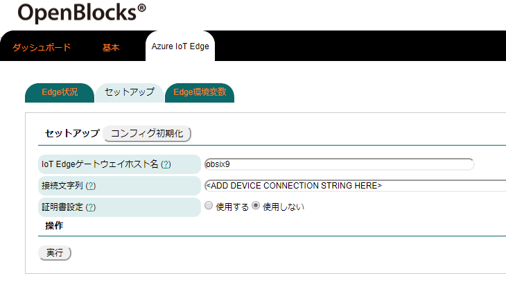
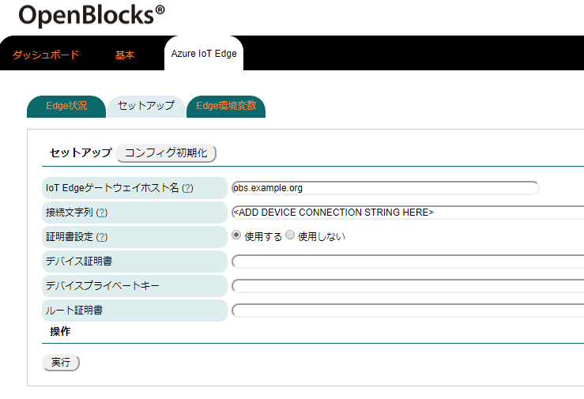
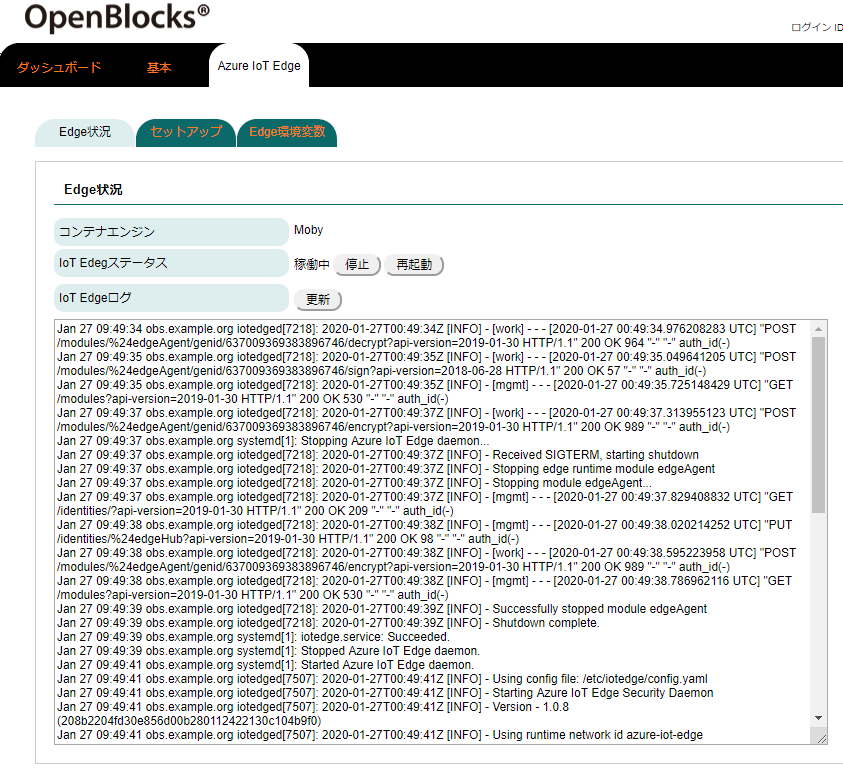
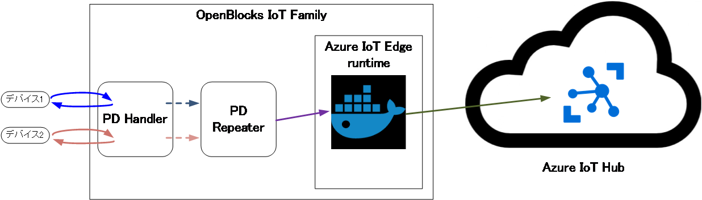
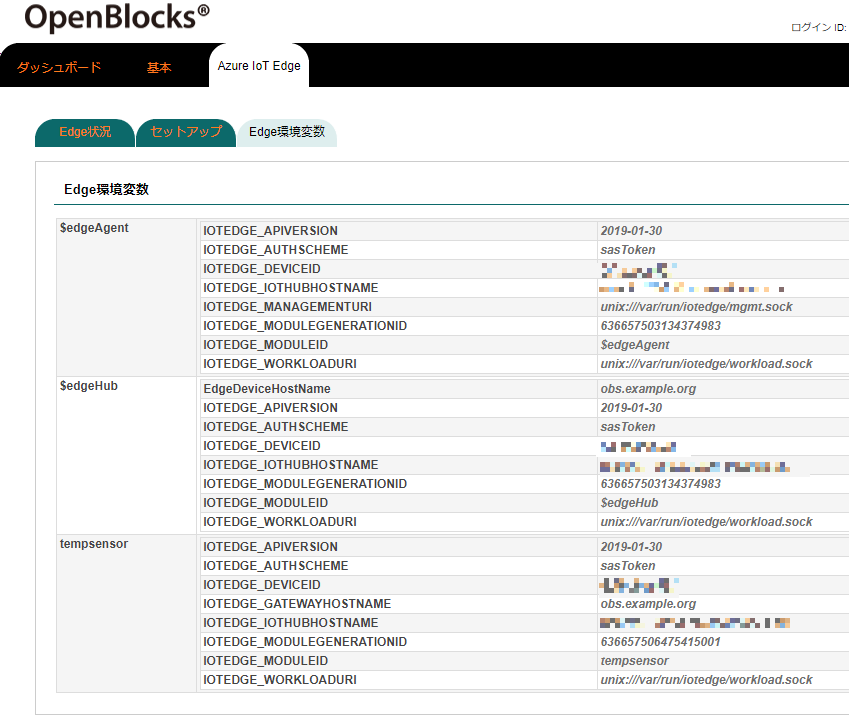

Azure IoT Edge設定¶
WEB UI込みAzure IoT Edgeのインストール¶
本製品出荷時では、Azure IoT Edge内で使用するDocker、Azure IoT Edgeモジュール及びAzure IoT Edge用WEB UIはインストールされておりません。そのため、WEB UIの「メンテナンス」→「機能拡張」タブからWEB UI及びAzure IoT Edgeのインストールを行います。

WEB UIの「メンテナンス」タブを選び、さらに「機能拡張」タブをクリックすると機能拡張用のパッケージを選択することができます。

インストール機能のリストから「Azure IoT Edge」を選択します。
その後、インストールの「実行」ボタンを押し、インストールを行ってください。
尚、インストール完了後には反映を行うため、本体再起動が必要となります。そのため、「メンテナンス」→「停止・再起動」から本製品の再起動を行ってください。
Azure IoT Edgeのインストールでは、Docker DAEMONが存在しない場合には、DockerDAEMONについてもインストールを行います。インストール作業の内部でコンパイルを行っている為、時間がかかりますので「状況確認」ボタンにてインストール状況をご確認ください。
Azure IoT Edgeは内部でコンテナエンジンを使用します。Azure IoT Edgeで使用するコンテナの状況等を確認する場合にはWEB UI(Docker)機能の使用についてもご検討ください。
また、ホストマシンとセンサー等のデバイス間でのデータをAzure IoT Edgeに対して送信することも可能です。この場合、IoTデータ制御機能のご使用についてもご検討ください。
[事前準備]IoT Hubの設定¶
Azure IoT Edgeを使用する場合、事前にIoT Hubの作成及びIoT Edgeデバイスの登録が必要となります。
これらの作業については、以下のページ内の"IoT Hub の作成"、"IoT Edge デバイスを登録する"をご確認の上作業を実施してください。
https://docs.microsoft.com/ja-jp/azure/iot-edge/quickstart-linux
また、登録したIoT Edgeデバイスの接続文字列(プライマリーキーまたはセカンダリーキー)を控えてください。
WEB UIからのAzure IoT Edge設定について¶
Azure IoT Edgeパッケージがインストールされていると、WEB UIの「サービス」→「基本」タブに「Azure IoT Edge」が表示されます。

「サービス」→「基本」タブより「Azure IoT Edge」リンクをクリックすると、ルートタブがサービス用の「ダッシュボード」／「基本」／「Azure IoT Edge」に切り替わります。
※「サービス」→「基本」タブに表示されるリンク及びサービス用のルートタブは、「メンテナンス」→「機能拡張」タブよりインストールされたパッケージにより異なります。
Azure IoT Edgeのセットアップ¶
注釈
本作業移行以降は"[事前準備]IoT Hubの設定"を実施している必要があります。
WEB UIの「Azure IoT Edge」→「セットアップ」タブを開き、IoT Hubの設定にて控えた接続文字列を使用し、Azure IoT Edgeのセットアップを行います。
証明書未使用時 |
証明書使用時 |
 |
 |
セットアップ |
|
|---|---|
「コンフィグ初期化」ボタンにて、設定したコンフィグの初期化が行えます。 |
|
項目 |
備考 |
IoT Edgeゲートウェイホスト名 |
デフォルトでOpenBlocks本体のFQDNが入力されます。 ※変更する必要はありません。 |
接続文字列 |
作成したIoT Edgeデバイスの接続文字列を入力します。 |
証明書設定 |
証明書を使用するかを設定します。入力として証明書を設定しない場合、内部的に証明書が作成さ れます。尚、内部生成された証明書を実運用することは推奨されておりません。 |
デバイス証明書(証明書使用時) |
デバイスCA証明書のファイルパスを設定します。 |
デバイスプライベートキー(証明書使用時) |
デバイスCA秘密キーのファイルパスを設定します。 |
ルート証明書(証明書使用時) |
所有者CAファイルパスを設定します。 |
各証明書ファイルは「システム」→「ファイル管理」タブでのアップロードを推奨いたします。IoT Edgeデーモンにて、各証明書のファイル及びファイル格納ディレクトリの権限確認があるため、ファイルには読み取り権限・ディレクトリには実行権限及び読み取り権限を付与する必要があります。
各フォームの入力完了後、「実行」ボタンを押してください。
正常に処理が完了後、「Edge状況」タブへ遷移します。
Azure IoT Edge操作¶
WEB UIの「Azure IoT Edge」→「Edge状況」タブでは、以下の作業が行えます。
コンテナエンジンの確認
Azure IoT Edgeデーモンのステータス状況の確認
Azure IoT Edgeデーモン制御
Azure IoT Edge一時ファイルの削除
Azure IoT Edgeのログ確認

Edge状況 |
|
|---|---|
項目 |
説明 |
コンテナエンジン |
Azure IoT Edgeにて用いるコンテナエンジンを表示します。尚、IoT Edgeで用いるコンテナエンジ ンはMobyを推奨されております。IoT Edgeに関してサポートを受ける場合はMobyとなっていること を確認してください。 |
IoT Edgeステータス |
IoT Edgeデーモンが起動しているか停止しているかを表示します。 また、起動状況に応じて各処理ボタンが表示されます。 ●停止中 起動：IoT Edgeデーモンを起動します。 一時ファイル削除：IoT Edgeデーモンが内部生成したファイルを削除します。尚、セットアップの コンフィグ情報を変更した場合には、本処理の実施を推奨いたします。 ●稼働中 停止：IoT Edgeデーモンを停止します。 再起動：IoT Edgeデーモンを再起動します。 |
IoT Edgeログ |
IoT Edgeデーモンのログが表示されます。 尚、「更新」ボタンにより最新のログ情報へと更新されます。 |
セットアップ完了後、本ページからIoT Edgeデーモンの起動または本体の再起動によりコンテナのダウンロードが実施されます。その後、Azure IoT Edgeが稼働し続けます。
Azure IoT Edgeモジュールの環境変数¶
下図のようにIoTデータ制御機能と連携させ、Azure IoT Edgeランタイムにてダウンロードしたコンテナ経由にてAzure IoT Hubへのデータ送信及びフィルタ処理を行うことができます。

IoTデータ制御機能にてデバイスデータをIoT Edgeモジュールに送信する場合、IoT Edgeモジュールが抱えている環境変数を使用する必要があります。
この環境変数は、WEB UIの「Azure IoT Edge」→「Edge環境変数」タブにて確認を行うことができます。

項目 |
説明 |
|---|---|
Edge環境変数 |
起動後にダウンロードされたコンテナ情報を参照し、Azure IoT Edge用の環境変数を表示します。 尚、IoTデータ制御機能にて必要となる情報はモジュールID(IOTEDGE_MODULEID)とGWホスト (IOTEDGE_GATEWAYHOSTNAME)です。こちらの情報をIoTデータ制御機能の該当タブにて情報を入力し てください。 |